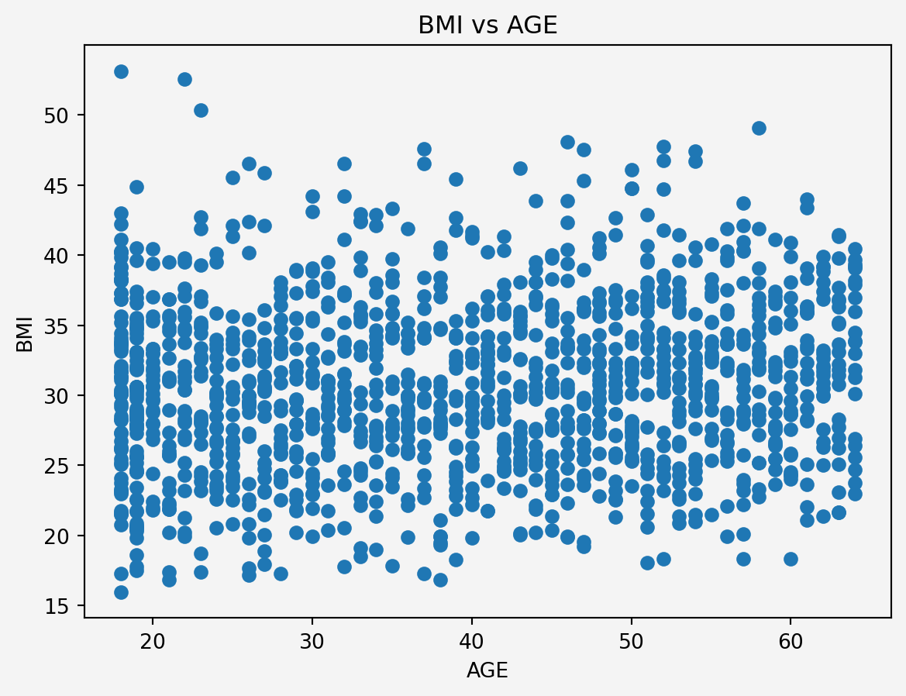

From the above plots, we can see that age feature stacks in three layers for charges. It maybe depending on other categorical features such as smoking status.
feature_name F-Statistic p-value
0 sex 4.399702 3.613272e-02
1 smoker 2177.614868 8.271436e-283
2 region 2.969627 3.089336e-02
3 children 3.296920 5.785681e-03
Information Gain
Both age and bmi features are positively correlated to charges with correlation coefficients \(0.3\) and \(0.2\), respectively. Since the \(p\)-values are less thatn \(0.05\), therefore, all the categorical features have impact on the target features.
Pre-processing
Data Cleaning
# Binary Encoding for the variables with two categoriesfrom sklearn.preprocessing import LabelEncoderinsurance['male'] = pd.get_dummies(insurance.sex, dtype=int)['male']insurance['smoke'] = pd.get_dummies(insurance.smoker, dtype=int)['yes']insurance.drop(['sex','smoker'],axis=1, inplace=True)label_encoder = LabelEncoder()insurance['region']=label_encoder.fit_transform(insurance['region'])new_order = ['age', 'bmi', 'male', 'smoke','children','region', 'charges']insurance = insurance[new_order]insurance['charges'] = insurance['charges'].round(2)insurance.sample(5)
age
bmi
male
smoke
children
region
charges
993
38
28.27
1
0
1
2
5484.47
1288
20
39.40
1
1
2
3
38344.57
1105
54
31.24
0
0
0
2
10338.93
636
19
24.51
0
0
1
1
2709.11
117
29
27.94
0
1
1
2
19107.78
Check for Multicollinearity
from statsmodels.stats.outliers_influence import variance_inflation_factorX = insurance.drop('charges', axis=1)vif_data = pd.DataFrame()vif_data['feature'] = X.columnsvif_data['VIF'] = [variance_inflation_factor(X.values,i) for i inrange(len(X.columns))]print(vif_data)
feature VIF
0 age 7.551348
1 bmi 10.371829
2 male 2.001061
3 smoke 1.256837
4 children 1.801245
5 region 2.924528
Since BMI and Age have higher values for the multicolinearity, therefore we adopt the following methods
Feature Engineering
Interaction term
plt.scatter(insurance.age,insurance.bmi)plt.xlabel('AGE')plt.ylabel('BMI')plt.title('BMI vs AGE')plt.gca().set_facecolor('#f4f4f4') plt.gcf().patch.set_facecolor('#f4f4f4')plt.show()

Since there is no clear linear relationship or any pattern, the Multicollinearity issue can be ignored. However, older individuals with a certain BMI range might have different risks or costs associated with their health. We could explore interaction terms like age * bmi in our model to capture any potential synergistic effects.
Baseline model: Assumption that the charges variable can be modeled with the mean value of this charges variable. \[
\text{charges}=\mathbb{E}[\text{charges}]+\xi
\]
Linear Regression with age-bmi-smoke interaction \[
\text{charges}=\beta_0+\beta_1 (\text{age\_bmi})+\beta_2 (\text{male})+\beta_3 (\text{smoke})+\beta_4 (\text{children})+\beta_5 (\text{region})+\beta_6 (\text{age-bmi-smoke})+\xi
\]
K-Neighbor Regression \(k\)NN using all the original feature
print(np.mean(np.sqrt(mses),axis=1))print('\n')print('Minimum RMSE={}\n Model {}'.format(min(np.mean(np.sqrt(mses),axis=1)),np.argmin(np.mean(np.sqrt(mses),axis=1))) )
[12101.66177575 5938.57275531 7120.2471585 ]
Minimum RMSE=5938.5727553087745
Model 1
Final Model
from sklearn.pipeline import Pipelinefrom sklearn.base import BaseEstimator, TransformerMixinfrom sklearn.preprocessing import OneHotEncoderdata = pd.read_csv('insurance.csv')class FeatureEngineering(BaseEstimator, TransformerMixin):def__init__(self):# Initialize OneHotEncoder for 'smoker' and 'sex'self.ohe_smoker_sex = OneHotEncoder( drop='first', dtype=int, sparse_output=False)self.label_encoder = LabelEncoder()def fit(self, X, y=None):# Fit the OneHotEncoder on smoker and sexself.ohe_smoker_sex.fit(X[['smoker', 'sex']])self.label_encoder.fit(X['region'])returnselfdef transform(self, X): X = X.copy()# Apply OneHotEncoder to 'smoker' and 'sex' smoker_sex_encoded =self.ohe_smoker_sex.transform( X[['smoker', 'sex']]) smoker_sex_columns = ['smoker_yes', 'sex_male']# Create DataFrame for encoded variables and merge with original data smoker_sex_df = pd.DataFrame( smoker_sex_encoded, columns=smoker_sex_columns, index=X.index) X = pd.concat([X, smoker_sex_df], axis=1)# Label encode the 'region' column X['region'] =self.label_encoder.transform(X['region'])# Create new features X['age_bmi'] = X['age'] * X['bmi'] X['age_bmi_smoker'] = X['age_bmi'] * X['smoker_yes']# Drop original columns X = X.drop(columns=['age', 'bmi', 'smoker', 'sex'])return Xdata = pd.read_csv('insurance.csv')data['charges'] = data['charges'].round(2)X = data.drop('charges', axis=1)y = data['charges']preprocessor = ColumnTransformer( transformers=[ ('scale', StandardScaler(), ['age_bmi', 'age_bmi_smoker']) ], remainder='passthrough')pipe = Pipeline(steps=[ ('feature_engineering', FeatureEngineering()), ('preprocess', preprocessor), ('model', LinearRegression())])X_train, X_test, y_train, y_test = train_test_split( X, y, test_size=0.3, shuffle=True, random_state=111)pipe.fit(X_train, y_train)print(np.round(pipe['model'].intercept_,2))
10621.25
Model Validation
Root Mean Squared Error (RMSE)
train_prediction = pipe.predict(X_train)test_prediction = pipe.predict(X_test)print("Training set RMSE:", np.round(np.sqrt(mean_squared_error(train_prediction,y_train))))print("Test set RMSE:", np.round(np.sqrt(mean_squared_error(test_prediction,y_test))))
Training set RMSE: 5853.0
Test set RMSE: 5600.0
R-Squared (\(R^2\))
from sklearn.metrics import r2_scorey_pred = pipe.predict(X_test)r2 = r2_score(y_test, y_pred)print(f'R-squared: {r2:.4f}')
---title: "Insurance Cost Forecast by using Linear Regression"author: "Rafiq Islam"date: 2024-09-12search: true---# Data Gathering, Defining Stakeholders and KPIs ## Data Loading```{python}#| code-fold: falseimport pandas as pdinsurance = pd.read_csv('insurance.csv')insurance.sample(5, random_state=111)```## Exploratory Data Analysis (EDA) ### Data Information ```{python}#| code-fold: falseinsurance.info()```No missing data. Total 1338 observations. ### Data Description Statistical properties of the non-categorical variables ```{python}#| code-fold: falseprint(insurance.describe())```### Data visualization #### Distribution of the features and target ```{python}#| code-fold: false#| output: falseimport seaborn as snsimport matplotlib.pyplot as pltfig, axes = plt.subplots(2,3,figsize = (15,9))sns.histplot(insurance['age'], color='red', kde=True, ax= axes[0, 0]).set_title('Age Distribution')sns.histplot(insurance['bmi'], color='green', kde=True, ax= axes[0,1]).set_title('BMI Distribution')sns.histplot(insurance['charges'],color='blue', kde=True, ax= axes[0,2]).set_title('Charge Distribution')sns.countplot(x='smoker', data=insurance, hue='sex', palette='Set2', ax=axes[1,0]).set_title('Smoker vs Gender')sns.countplot(x=insurance['region'], hue=insurance['region'], palette='Set1', ax=axes[1,1]).set_title('Region Distribution')sns.countplot(x=insurance['children'], hue=insurance['children'],legend=False,palette='Set2', ax=axes[1,2]).set_title('Children Distribution')plt.gcf().patch.set_facecolor('#f4f4f4')```<p align="center"> <img src="dataviz.png" alt="Data Vizualization" width="900" height="550"/></p> #### Relationship of the features and target```{python}#| code-fold: false#| warning: falsefig, axes = plt.subplots(1,2, figsize=(9.5,4))g=sns.stripplot(data=insurance, x='smoker', y='charges', hue='smoker' ,palette=['blue', 'orange'], legend=True, ax=axes[0])g.set_yticklabels(['0k','10k','20k','30k','40k','50k','60k','65k'])axes[1].scatter(insurance.loc[insurance.smoker=='yes'].bmi, insurance.loc[insurance.smoker=='yes'].charges, label="yes", marker='o', s=60,edgecolors='black', c='orange' )axes[1].set_yticklabels(['0k','10k','20k','30k','40k','50k','60k','65k'])axes[1].scatter(insurance.loc[insurance.smoker=='no'].bmi, insurance.loc[insurance.smoker=='no'].charges, label="no", marker='v', s=60,edgecolors='black', c='lightblue' )axes[1].set_yticklabels(['0k','10k','20k','30k','40k','50k','60k','65k'])axes[1].set_xlabel('bmi')axes[1].set_ylabel('charges')axes[1].legend()for ax in axes: ax.set_facecolor('#f4f4f4')plt.gcf().patch.set_facecolor('#f4f4f4')plt.show()```Clearly from the plots above we can see that the somoking status has effect on the insurance charges in relation with bmi```{python}#| code-fold: false#| warning: falsefig, axes = plt.subplots(1,2,figsize=(9.5,4))g1=sns.stripplot(x='region', y='charges', data=insurance, ax=axes[0])g1.set_xticklabels(['SW', 'SE', 'NW','NE'])g1.set_yticklabels(['0k','10k','20k','30k','40k','50k','60k','65k'])g2=sns.scatterplot(x='age', y='charges', data=insurance, hue='smoker' ,ax=axes[1])g2.set_yticklabels(['0k','10k','20k','30k','40k','50k','60k','65k'])for ax in axes: ax.set_facecolor('#f4f4f4')plt.gcf().patch.set_facecolor('#f4f4f4')plt.show()``````{python}#| code-fold: false#| warning: falsefig, axes = plt.subplots(1,2, figsize=(9,4))g1=sns.stripplot(x='children', y='charges',data=insurance,hue='children',palette='Set1', ax=axes[0])g1.set_yticklabels(['0k','10k','20k','30k','40k','50k','60k','65k'])g1.set_facecolor('#f4f4f4')g2=sns.boxplot(x='sex', y='charges', data=insurance, hue='sex', palette='Set2', ax=axes[1])g2.set_yticklabels(['0k','10k','20k','30k','40k','50k','60k','65k'])g2.set_facecolor('#f4f4f4')plt.gcf().patch.set_facecolor('#f4f4f4')plt.show()```To see the combined effect of all the features ```{python}#| code-fold: false#| warning: falseplt.figure(figsize=(12,6))g = sns.FacetGrid(insurance, col='smoker', row='sex',hue='region', margin_titles=True, height=2.4, aspect=1.5)g.map(sns.scatterplot, 'age','charges')g.fig.patch.set_facecolor('#f4f4f4')g.add_legend()plt.show()```#### Information Gain From the above plots, we can see that `age` feature stacks in three layers for charges. It maybe depending on other categorical features such as smoking status. ### Correlation Analysis #### Contineous Features```{python}#| code-fold: falsecorr_matrix = insurance[['age','bmi','charges']].corr()sns.heatmap(corr_matrix, annot=True, cmap='coolwarm', linewidths=0.5)plt.title('Correlation Matrix')plt.gca().set_facecolor('#f4f4f4') plt.gcf().patch.set_facecolor('#f4f4f4')plt.show()```#### Categorical Features```{python}#| code-fold: falseimport scipy.stats as stanova_sex, p_value1 = st.f_oneway( insurance[insurance['sex']=='male']['charges'], insurance[insurance['sex']=='female']['charges'])anova_smoker, p_value2 = st.f_oneway( insurance[insurance['smoker']=='yes']['charges'], insurance[insurance['smoker']=='no']['charges'])anova_region, p_value3 = st.f_oneway( insurance[insurance['region']=='southwest']['charges'], insurance[insurance['region']=='southeast']['charges'], insurance[insurance['region']=='northwest']['charges'], insurance[insurance['region']=='northeast']['charges'])anova_children, p_value4 = st.f_oneway( insurance[insurance['children']==0]['charges'], insurance[insurance['children']==1]['charges'], insurance[insurance['children']==2]['charges'], insurance[insurance['children']==3]['charges'], insurance[insurance['children']==4]['charges'], insurance[insurance['children']==5]['charges'])anova_results = {'feature_name': ['sex', 'smoker', 'region', 'children'],'F-Statistic':[anova_sex, anova_smoker,anova_region,anova_children],'p-value':[p_value1, p_value2, p_value3, p_value4]}anova = pd.DataFrame(anova_results)print(anova)```#### Information Gain Both `age` and `bmi` features are positively correlated to `charges` with correlation coefficients $0.3$ and $0.2$, respectively. Since the $p$-values are less thatn $0.05$, therefore, all the categorical features have impact on the target features. ## Pre-processing### Data Cleaning```{python}#| code-fold: false# Binary Encoding for the variables with two categoriesfrom sklearn.preprocessing import LabelEncoderinsurance['male'] = pd.get_dummies(insurance.sex, dtype=int)['male']insurance['smoke'] = pd.get_dummies(insurance.smoker, dtype=int)['yes']insurance.drop(['sex','smoker'],axis=1, inplace=True)label_encoder = LabelEncoder()insurance['region']=label_encoder.fit_transform(insurance['region'])new_order = ['age', 'bmi', 'male', 'smoke','children','region', 'charges']insurance = insurance[new_order]insurance['charges'] = insurance['charges'].round(2)insurance.sample(5)```### Check for Multicollinearity ```{python}#| code-fold: falsefrom statsmodels.stats.outliers_influence import variance_inflation_factorX = insurance.drop('charges', axis=1)vif_data = pd.DataFrame()vif_data['feature'] = X.columnsvif_data['VIF'] = [variance_inflation_factor(X.values,i) for i inrange(len(X.columns))]print(vif_data)```Since BMI and Age have higher values for the multicolinearity, therefore we adopt the following methods ### Feature Engineering #### Interaction term ```{python}#| code-fold: falseplt.scatter(insurance.age,insurance.bmi)plt.xlabel('AGE')plt.ylabel('BMI')plt.title('BMI vs AGE')plt.gca().set_facecolor('#f4f4f4') plt.gcf().patch.set_facecolor('#f4f4f4')plt.show()```<p style="text-align: justify"> Since there is no clear linear relationship or any pattern, the Multicollinearity issue can be ignored. However, older individuals with a certain BMI range might have different risks or costs associated with their health. We could explore interaction terms like `age` * `bmi` in our model to capture any potential synergistic effects. </p>```{python}#| code-fold: falseinsurance.insert(6,'age_bmi',insurance.age*insurance.bmi)insurance.insert(7,'age_bmi_smoke',insurance.age_bmi*insurance.smoke)insurance.sample(5,random_state=111)```### Data Splitting ```{python}#| code-fold: falsefrom sklearn.model_selection import train_test_splitX = insurance.drop('charges',axis=1)y = insurance['charges'].to_frame()X_train, X_test, y_train, y_test = train_test_split( X, y, test_size=0.30, random_state=42)```### Standardization ```{python}#| code-fold: falsefrom sklearn.preprocessing import StandardScalerfrom sklearn.compose import ColumnTransformerconts_features = ['age','bmi','age_bmi']categ_features = ['male','smoke', 'children','region']preprocessor = ColumnTransformer( transformers=[ ('num', StandardScaler(), conts_features) ], remainder='passthrough')X_train_sc = preprocessor.fit_transform(X_train)X_test_sc = preprocessor.fit(X_test)```# Model ## Modelling Approaches We consider the following models 1. **Baseline model:** Assumption that the `charges` variable can be modeled with the mean value of this `charges` variable. $$ \text{charges}=\mathbb{E}[\text{charges}]+\xi $$2. **Linear Regression with `age-bmi-smoke` interaction** $$ \text{charges}=\beta_0+\beta_1 (\text{age\_bmi})+\beta_2 (\text{male})+\beta_3 (\text{smoke})+\beta_4 (\text{children})+\beta_5 (\text{region})+\beta_6 (\text{age-bmi-smoke})+\xi $$ 3. **K-Neighbor Regression** $k$NN using all the original feature```{python}#| code-fold: falseimport numpy as npfrom sklearn.model_selection import KFoldfrom sklearn.linear_model import LinearRegressionfrom sklearn.neighbors import KNeighborsRegressorfrom sklearn.metrics import mean_squared_errorkfold = KFold(n_splits=5,shuffle=True, random_state=111)mses = np.zeros((3,5))k =10for i, (train_index, test_index) inenumerate(kfold.split(X_train_sc)): X_train_sc_train = X_train_sc[train_index] X_train_sc_holdout = X_train_sc[test_index] y_train_train = y_train.iloc[train_index] y_train_holdout = y_train.iloc[test_index] pred0 = y_train_train.charges.mean()*np.ones(len(test_index)) model1 = LinearRegression() model2 = KNeighborsRegressor(k) model1.fit(X_train_sc_train[:,2:], y_train_train) model2.fit(X_train_sc_train[:,:6], y_train_train) pred1 = model1.predict(X_train_sc_holdout[:,2:]) pred2 = model2.predict(X_train_sc_holdout[:,:6]) mses[0,i] = mean_squared_error(y_train_holdout, pred0) mses[1,i] = mean_squared_error(y_train_holdout, pred1) mses[2,i] = mean_squared_error(y_train_holdout, pred2)plt.scatter(np.zeros(5), mses[0,:],s=60, c='white', edgecolors='black', label='Single Split')plt.scatter(np.ones(5), mses[1,:], s=60, c='white', edgecolors='black')plt.scatter(2*np.ones(5), mses[1,:], s=60, c='white', edgecolors='black')plt.scatter([0,1,2],np.mean(mses, axis=1),s=60, c='r', marker='X', label='Mean')plt.legend(loc='upper right', fontsize=12)plt.xticks([0,1,2],['Baseline','LinReg','KNN Reg'])plt.yticks(fontsize=10)plt.ylabel('MSE',fontsize=12)plt.gca().set_facecolor('#f4f4f4')plt.gcf().patch.set_facecolor('#f4f4f4')plt.show()``````{python}#| code-fold: falseprint(np.mean(np.sqrt(mses),axis=1))print('\n')print('Minimum RMSE={}\n Model {}'.format(min(np.mean(np.sqrt(mses),axis=1)),np.argmin(np.mean(np.sqrt(mses),axis=1))) )```## Final Model ```{python}#| code-fold: false#| warning: falsefrom sklearn.pipeline import Pipelinefrom sklearn.base import BaseEstimator, TransformerMixinfrom sklearn.preprocessing import OneHotEncoderdata = pd.read_csv('insurance.csv')class FeatureEngineering(BaseEstimator, TransformerMixin):def__init__(self):# Initialize OneHotEncoder for 'smoker' and 'sex'self.ohe_smoker_sex = OneHotEncoder( drop='first', dtype=int, sparse_output=False)self.label_encoder = LabelEncoder()def fit(self, X, y=None):# Fit the OneHotEncoder on smoker and sexself.ohe_smoker_sex.fit(X[['smoker', 'sex']])self.label_encoder.fit(X['region'])returnselfdef transform(self, X): X = X.copy()# Apply OneHotEncoder to 'smoker' and 'sex' smoker_sex_encoded =self.ohe_smoker_sex.transform( X[['smoker', 'sex']]) smoker_sex_columns = ['smoker_yes', 'sex_male']# Create DataFrame for encoded variables and merge with original data smoker_sex_df = pd.DataFrame( smoker_sex_encoded, columns=smoker_sex_columns, index=X.index) X = pd.concat([X, smoker_sex_df], axis=1)# Label encode the 'region' column X['region'] =self.label_encoder.transform(X['region'])# Create new features X['age_bmi'] = X['age'] * X['bmi'] X['age_bmi_smoker'] = X['age_bmi'] * X['smoker_yes']# Drop original columns X = X.drop(columns=['age', 'bmi', 'smoker', 'sex'])return Xdata = pd.read_csv('insurance.csv')data['charges'] = data['charges'].round(2)X = data.drop('charges', axis=1)y = data['charges']preprocessor = ColumnTransformer( transformers=[ ('scale', StandardScaler(), ['age_bmi', 'age_bmi_smoker']) ], remainder='passthrough')pipe = Pipeline(steps=[ ('feature_engineering', FeatureEngineering()), ('preprocess', preprocessor), ('model', LinearRegression())])X_train, X_test, y_train, y_test = train_test_split( X, y, test_size=0.3, shuffle=True, random_state=111)pipe.fit(X_train, y_train)print(np.round(pipe['model'].intercept_,2))```## Model Validation ### Root Mean Squared Error (RMSE)```{python}#| code-fold: falsetrain_prediction = pipe.predict(X_train)test_prediction = pipe.predict(X_test)print("Training set RMSE:", np.round(np.sqrt(mean_squared_error(train_prediction,y_train))))print("Test set RMSE:", np.round(np.sqrt(mean_squared_error(test_prediction,y_test))))```### R-Squared ($R^2$) ```{python}#| code-fold: falsefrom sklearn.metrics import r2_scorey_pred = pipe.predict(X_test)r2 = r2_score(y_test, y_pred)print(f'R-squared: {r2:.4f}')```### Residuals ```{python}#| code-fold: falseres = y_test - y_predplt.scatter(y_pred, res)plt.axhline(y=0, color='r', linestyle='--')plt.xlabel('Predicted Values')plt.ylabel('Residuals')plt.title('Residuals Plot')plt.gca().set_facecolor('#f4f4f4') plt.gcf().patch.set_facecolor('#f4f4f4')plt.show()``````{python}#| code-fold: falsesns.displot(res,kind='kde')plt.gca().set_facecolor('#f4f4f4') plt.gcf().patch.set_facecolor('#f4f4f4')plt.show()```# Development and Deployment```{python}#| code-fold: falseimport picklepickle.dump(pipe, open('regmodel.pkl','wb'))```